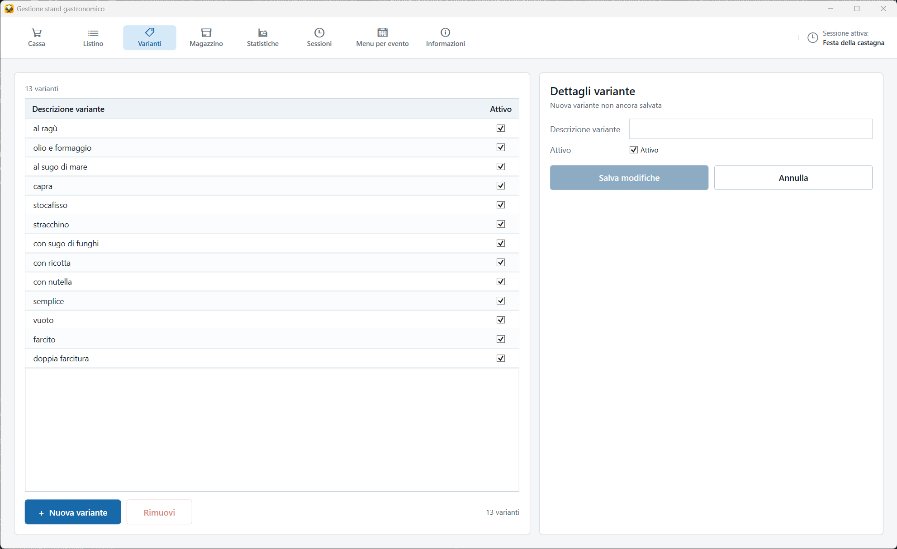
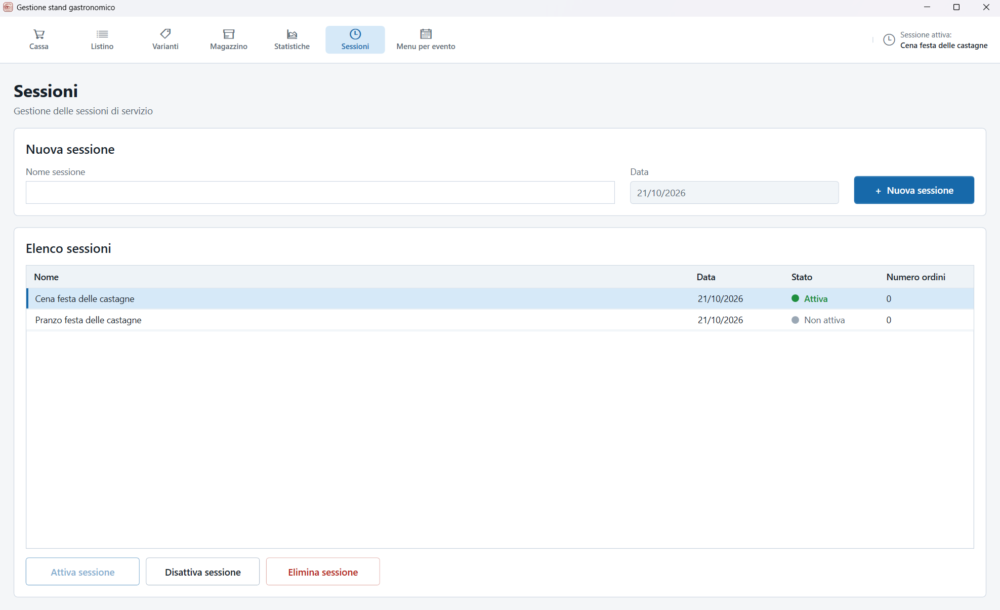
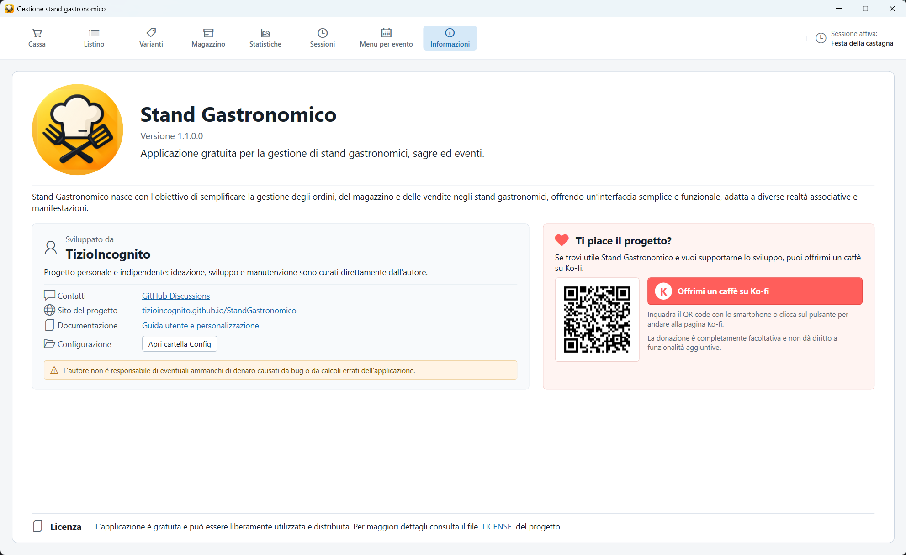

A cosa serve
Gestire il servizio dello stand: ordini, prodotti, varianti, scorte, sessioni, statistiche e configurazioni del menu.
Le schermate
- Cassa – creare, modificare e stampare gli ordini.
- Listino – prodotti, prezzi, varianti associate e relativi supplementi.
- Varianti – archivio delle preparazioni alternative.
- Magazzino – porzioni disponibili di prodotti e varianti.
- Statistiche – vendite, incassi ed esportazione in Excel.
- Sessioni – turni di servizio e relativi ordini.
- Menu per evento – configurazioni salvate dei prodotti e delle varianti attive.
- Informazioni – versione del programma, collegamenti e apertura della cartella Config.
Procedura rapida per un servizio
- Sessioni – creare o attivare la sessione del servizio.
- Listino – controllare prodotti, prezzi, varianti e supplementi.
- Magazzino – impostare le porzioni disponibili quando necessario.
- Cassa – creare gli ordini, indicare il cliente e salvarli.
- Stampa – stampare gli ordini salvati quando serve.
- Statistiche – controllare gli incassi ed esportarli in Excel se necessario.
1. Cassa – creare un ordine
È la schermata principale durante il servizio. I prodotti sono a sinistra e l'ordine in corso a destra.

Creare un ordine
- Controllare che la sessione corretta sia attiva, poi premere Nuovo ordine.
- Inserire il Cliente: il nome è obbligatorio per salvare.
- Fare clic sui prodotti desiderati. Se richiesto, scegliere la variante.
- Cliccando di nuovo lo stesso prodotto con la stessa variante, la quantità aumenta sulla stessa riga.
- Controllare il totale e premere Salva.
Le righe sono raggruppate per categoria: Bar, Primi, Secondi, Fritti, Griglia.
Il prezzo unitario è il prezzo base del prodotto più il supplemento della variante per quel prodotto. Lo stesso ragù può costare 0,50 € sui ravioli e 1,00 € sulla polenta.
Cassa – ordini già registrati
- Il numero in alto è modificabile: inserirlo e premere Invio per aprire l'ordine nella sessione attiva.
- Le frecce < e > passano da un ordine all'altro della sessione.
- Un ordine della sessione attiva può essere modificato e salvato di nuovo.
- Un ordine di una sessione precedente si può vedere e ristampare, ma non modificare.
- Un ordine registrato non si elimina: gli errori si correggono modificandolo.
- La data e l'ora indicano l'ultimo salvataggio; la stampa non le cambia.
Stampa
- Stampa invia direttamente l'ordine alla stampante predefinita, senza anteprima.
- Il pulsante è attivo solo per un ordine salvato e senza modifiche non salvate.
- Dopo una stampa riuscita la Cassa si svuota e parte con un ordine nuovo.
- Se non c'è una sessione attiva, l'ordine stampato resta a schermo.
Un foglio A4 con riepilogo completo e sezioni operative PRIMI, SECONDI, FRITTI e GRIGLIA. Il Bar compare nel riepilogo.
2. Listino – prodotti e prezzi
Qui si configurano i prodotti vendibili e l'ordine con cui compaiono in Cassa.

Prodotti
- Le categorie sono fisse: Bar, Primi, Secondi, Fritti, Griglia.
- Per ogni prodotto si gestiscono descrizione, categoria, prezzo base e casella Attivo.
- Un prodotto non attivo non compare in Cassa.
- Con Sposta su e Sposta giù si cambia l'ordine nella categoria; la Cassa usa lo stesso ordine.
- Salva modifiche salva il prodotto e le associazioni alle varianti.
Varianti e supplementi
- Le varianti compatibili si associano nella sezione Varianti associate. Una variante può essere impostata come predefinita per quel prodotto.
- Il supplemento si digita nella riga della variante associata e vale solo per quel prodotto. La stessa variante può avere supplementi diversi da un prodotto all'altro: è il caso del ragù sui ravioli e sulla polenta.
3. Varianti – archivio delle preparazioni
Le varianti sono preparazioni alternative che possono essere scelte per un prodotto, ad esempio Ragù oppure Olio e formaggio.

- Ogni variante ha una descrizione e lo stato Attivo.
- Il supplemento non si imposta qui: è un dato del prodotto e si digita nel Listino.
- L'archivio è generale: la stessa variante può essere usata da più prodotti.
- Le associazioni tra varianti e prodotti si configurano dal Listino.
- Una variante inattiva non viene proposta in Cassa.
- Una variante esaurita viene mostrata come Esaurita, ma non può essere scelta.
Rimuovere una variante
- Rimuovi toglie la variante da tutti i prodotti.
- Se non è mai stata usata in un ordine, viene eliminata dall'archivio.
- Se è già stata usata, viene disattivata e resta in archivio: gli ordini già registrati restano corretti.
- Un prodotto che resta senza varianti diventa vendibile al prezzo base.
4. Magazzino – controllare le scorte
Permette di impostare quante porzioni sono ancora vendibili per prodotti e varianti.

- Sono disponibili due schede: Prodotti e Varianti.
- Fare doppio clic sulla cella della disponibilità, modificare il valore e premere Invio; Esc annulla.
- Cella vuota = disponibilità illimitata.
- Numero intero positivo = porzioni ancora vendibili.
- 0 = esaurito e non vendibile.
5. Statistiche – vendite e incassi
Permette di consultare i risultati di una sessione e di esportarli in un file Excel.

- Selezionare la sessione da analizzare.
- La tabella raggruppa le vendite per prodotto e variante.
- Le colonne sono Nome, Quantità, Prezzo unitario e Prezzo totale.
- Il prezzo unitario è quello applicato alla vendita, compresi gli eventuali supplementi.
- In fondo viene mostrato il totale complessivo degli incassi.
- I dati provengono dagli ordini salvati della sessione.
Esportare in Excel
Premere Esporta in Excel, scegliere percorso e nome del file nella finestra di Windows e confermare. Viene creato un file .xlsx; Excel non deve essere installato.
Il file contiene un foglio chiamato Statistiche, con la sessione analizzata, la tabella di nome, quantità, prezzo unitario e prezzo totale, e il totale incassi. Gli importi sono numerici e formattati in euro.
6. Sessioni – organizzare i servizi
Una sessione rappresenta un servizio o un turno, per esempio Pranzo o Cena. Ogni ordine appartiene alla sessione nella quale è stato creato.

- Per creare una sessione inserire il Nome sessione e premere Crea nuova sessione; la data è automatica.
- La nuova sessione diventa automaticamente attiva.
- Con Attiva sessione e Disattiva sessione si cambia lo stato della sessione selezionata.
- Una sessione disattivata conserva ordini, vendite e statistiche, ma i suoi ordini sono di sola lettura.
- Elimina rimuove la sessione e i suoi ordini, dopo conferma.
- Può esserci al massimo una sessione attiva. Se non ce n'è una, non si creano nuovi ordini.
8. Informazioni – aprire la cartella Config
La scheda Informazioni raccoglie la versione del programma, i contatti, i collegamenti e le informazioni sulla licenza.

- Mostra la versione installata: utile quando si segnala un problema.
- Contatti, sito del progetto e guida utente si aprono con un clic.
- Apri cartella Config apre la cartella con
categories.jsone i template di stampa. - Le etichette delle categorie si leggono all'avvio: dopo una modifica, chiudere e riaprire il programma.
- I template di stampa vengono riletti a ogni stampa: non serve riavviare.
categories.json contiene un errore, all'avvio compare un avviso e vengono usate le etichette predefinite.Riferimento rapido
| Cosa devo fare | Dove |
|---|---|
| Creare un nuovo ordine | Cassa > Nuovo ordine |
| Aprire un ordine | Cassa > scrivere il numero in alto > Invio |
| Cambiare prezzo o supplemento | Listino > prodotto > riga della variante |
| Creare una variante | Varianti > Nuova variante |
| Impostare le scorte | Magazzino > doppio clic sulla cella |
| Controllare gli incassi | Statistiche > selezionare la sessione |
| Iniziare o chiudere un servizio | Sessioni > creare, attivare o disattivare |
| Salvare una configurazione del menu | Menu per evento > Salva come nuovo evento |
| Aprire la cartella di configurazione | Informazioni > Apri cartella Config |
Questa guida è un riferimento rapido per l'utilizzo operativo del programma.
Per i dati del listino, i prezzi e le impostazioni del servizio fanno fede le schermate del programma.